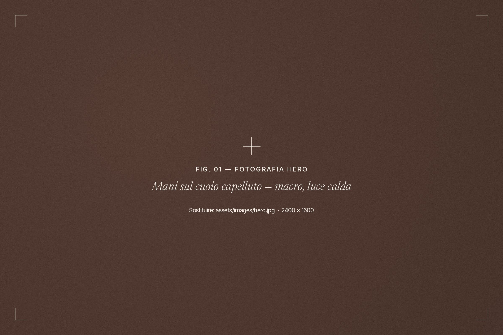
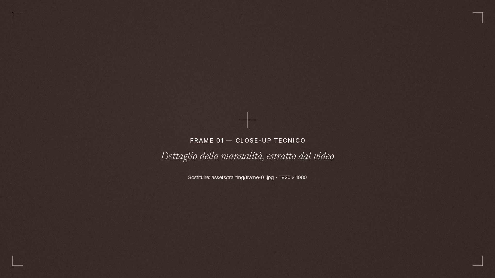
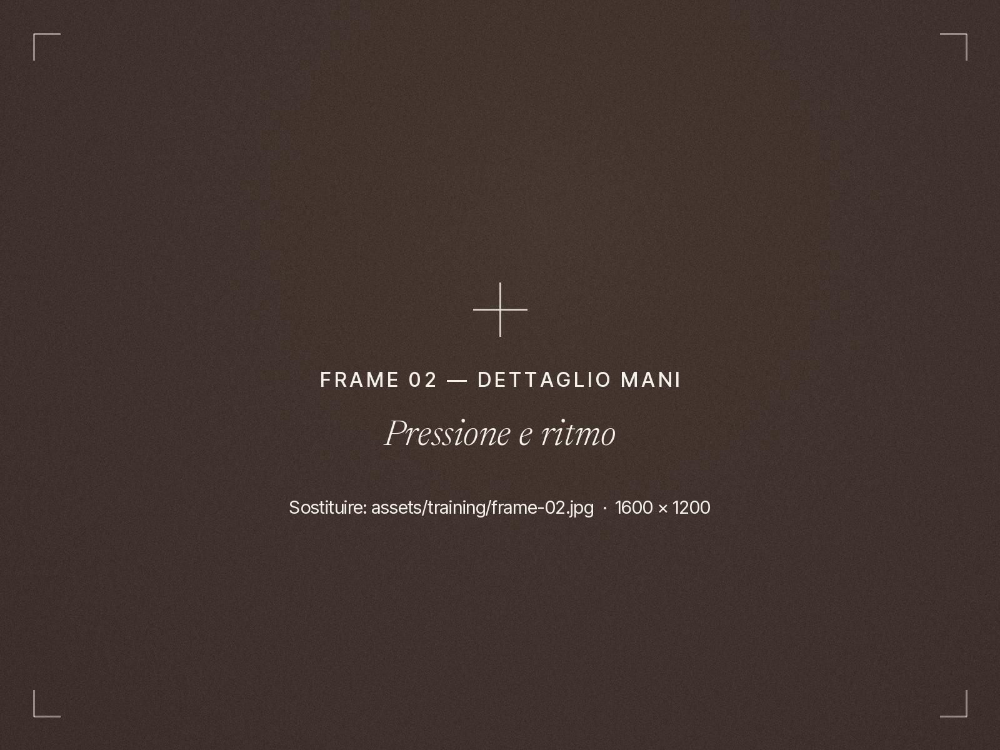
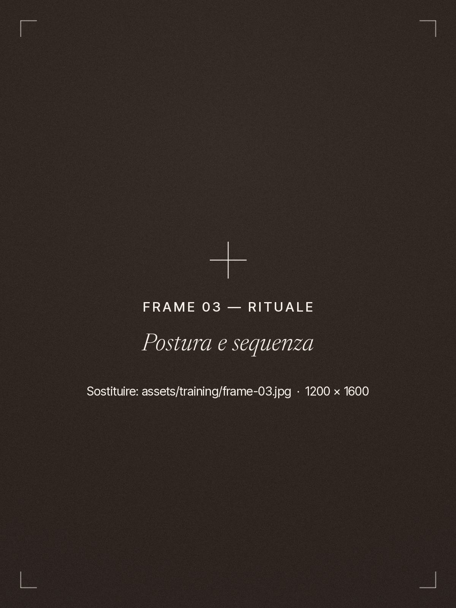
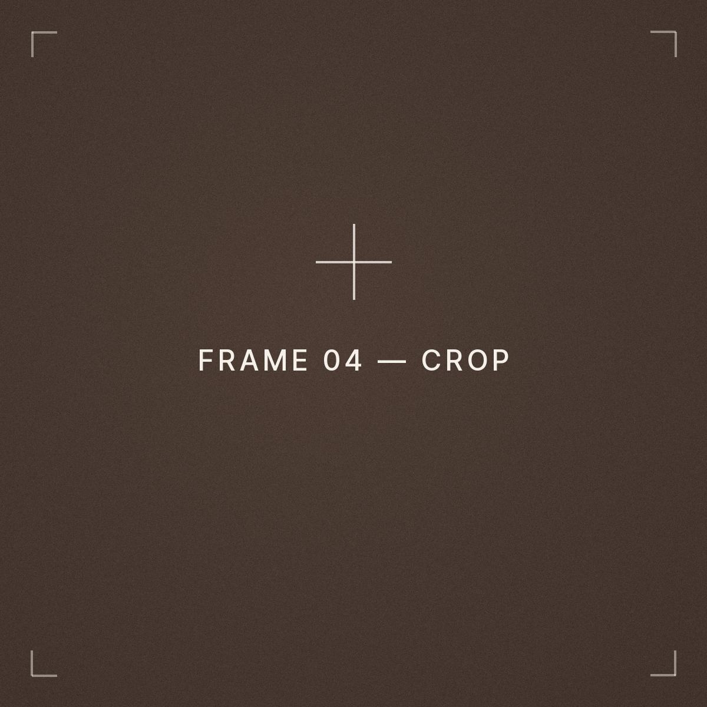
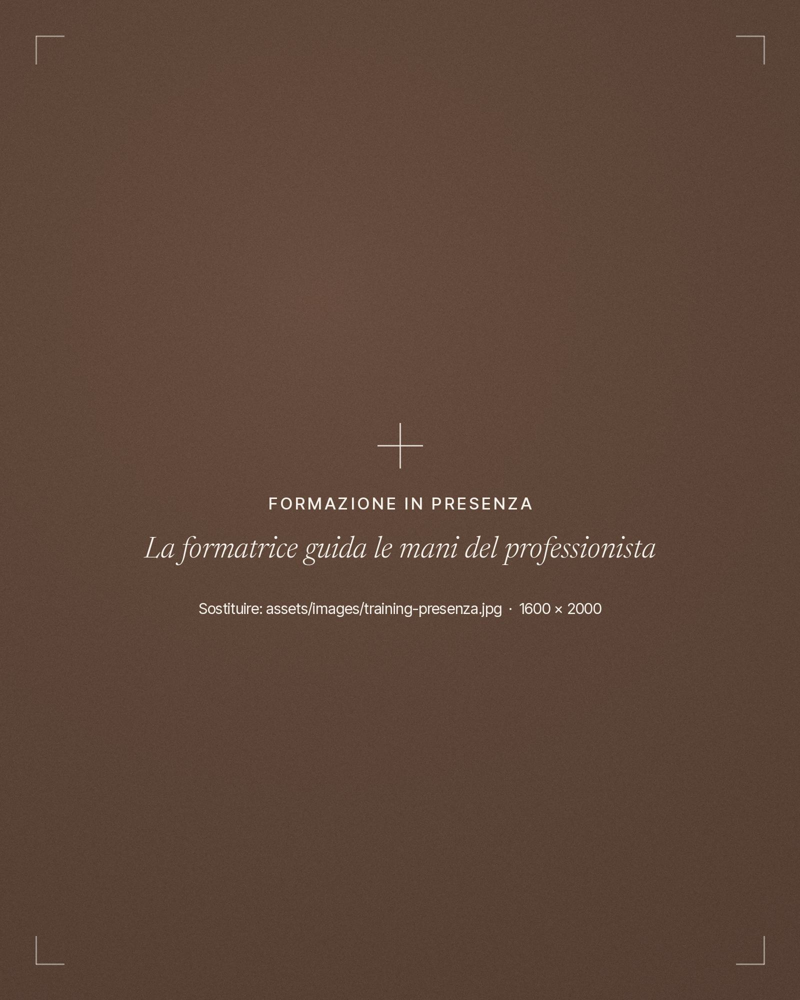
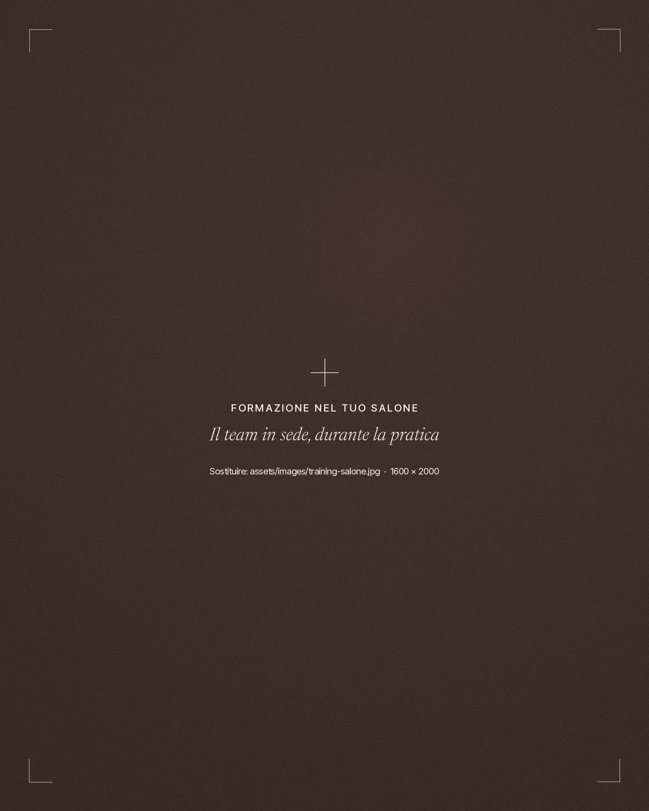
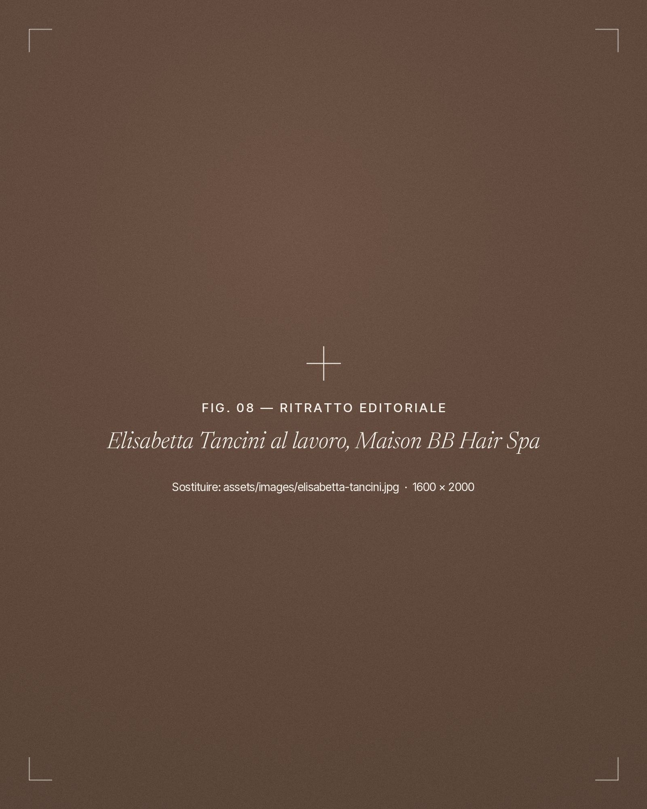

Team
Un protocollo che può essere condiviso, applicato e replicato.
Tecnica individualeProtocollo condiviso
Formazione Hair Spa professionale
Per titolari di salone e team
Élite Experience forma professionisti e team per costruire servizi Hair Spa strutturati, riconoscibili e applicabili nel salone.
Scopri il metodo
02Manifesto
Una Hair Spa prende valore quando tecnica, accoglienza, manualità e proposta diventano parte dello stesso metodo.
03Cosa cambia nel salone
Un lettino, uno spazio dedicato o una singola tecnica non costruiscono da soli una Hair Spa. Il servizio nasce quando tecnica, manualità, protocollo, accoglienza, organizzazione, team, proposta e continuità lavorano insieme — e si traducono in valore percepito dal cliente.
Un protocollo che può essere condiviso, applicato e replicato.
Tecnica individualeProtocollo condiviso
Servizi Hair Spa riconoscibili e valorizzabili.
Trattamento occasionaleServizio a listino
Percorsi pensati per continuità e fidelizzazione.
Singola sedutaPercorso nel tempo
Una nuova area di servizio da integrare nel business del salone.
Costo di formazioneArea di business
04Il metodo Élite
Il salone.
Il team.
Il cliente.
EsitoUna lettura chiara del punto di partenza: spazi, competenze, clientela.
Tecniche.
Manualità.
Protocolli.
EsitoUn linguaggio tecnico comune a tutto il team.
Trasformare la formazione in servizio.
EsitoIl rituale entra nel listino e nell’agenda del salone.
Costruire percorsi, proposta e continuità.
EsitoClienti che tornano, servizi che crescono nel tempo.
Le quattro fasi si applicano a ogni rituale e a ogni modalità di formazione.
05Dentro la formazione
Entra nella formazione Élite Experience attraverso una selezione di passaggi reali dei nostri videocorsi.
Tecnica, manualità e protocollo prendono forma in contenuti costruiti per accompagnare il professionista nell’applicazione del rituale in salone.
Formazione costruita per essere applicata.
Scopri la formazioneDal videocorso
Ogni contenuto segue la struttura del protocollo: la tecnica viene mostrata da vicino, scomposta nei suoi passaggi e ricondotta alla sequenza del rituale.




06I rituali
Ogni rituale è un modulo del sistema Élite: un protocollo con una propria sequenza tecnica, un proprio focus e un proprio posto nell’offerta del salone.
Il modulo d’ingresso nel metodo: accoglienza, detersione e manualità di rilassamento sul cuoio capelluto.
FocusCuoio capelluto · Rilassamento
Il moduloManualità con pinda, tamponi in tessuto riscaldati: un lavoro di calore e pressione costruito in sequenza.
FocusCalore · Pressione
Il moduloLa spazzolatura diventa gesto tecnico: preparazione, stimolazione e finitura del capello.
FocusSpazzolatura · Stimolazione
Il moduloUna sequenza di manualità dinamiche dedicate alla tonicità del cuoio capelluto.
FocusManualità dinamiche · Tonicità
Il moduloIl protocollo più esteso: testa, collo e spalle in un’unica sequenza di rilassamento.
FocusTesta · Collo · Spalle
Il moduloIl percorso completo Élite Experience
I cinque moduli in un unico percorso: la struttura completa del metodo, per il salone che vuole costruire un’area Hair Spa con un’offerta articolata e coerente.
Il team impara a gestire più rituali con lo stesso linguaggio tecnico. Il salone può costruire una proposta su più livelli e accompagnare il cliente nel tempo.
Scopri il percorso completo07Formazione
Il metodo Élite disponibile attraverso contenuti formativi strutturati.

Apprendimento diretto delle tecniche e dei protocolli.

CFormazione nel tuo salone
Un intervento dedicato alla realtà, al team e agli obiettivi specifici del salone.
Leggere lo spazio, il team, la clientela.
Formare il team sul posto, sugli stessi protocolli.
Applicare il rituale nei tempi reali del salone.
Valorizzare il servizio nella proposta al cliente.

08Il metodo nasce in salone
Élite Experience nasce dall’esperienza reale di una professionista che sviluppa, applica e perfeziona il metodo nel proprio lavoro.
Ogni passaggio viene costruito e verificato nella quotidianità di Maison BB Hair Spa — con il suo team, i suoi clienti, i suoi tempi — prima di diventare formazione.
Prima applicato in salone.
Poi insegnato.
09Da dove partire
Costruiamo il metodo, la formazione e i servizi con cui portarla realmente nel tuo salone.